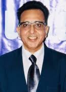
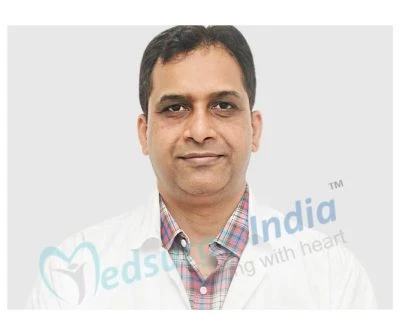

Dr. Omkar Nath Bhakoo
Pioneer of many academic courses and advanced medical techniques in the field of pediatrics. Specializes in routine medical care and vaccination schedule of new born babies. Has extensive experience in managing health of new born babies.
Dr. Mukul Varma
Dr. Mukul Varma has over 28 years of expertise as a Neurologist. He is also interested in mobility problems, multiple sclerosis, and headache treatment. Moreover, in 2004, Dr. Mukul Varma obtained specialized training and courses in the United States on mobility issues..
Dr. Rashid Merchant
He is highly skilled in areas like HIV/AIDs, Thalassemia and cases of Primary Immune Deficiency. He has many publications and research papers on his name.
Dr. Shanti Talwar

She is highly qualified pediatric surgeon. Her areas of interest include management of neonatal intestinal obstruction and various types of neonatal surgery.
Dr. Rajiv Anand
Dr. Rajiv Anand is a well-known neurologist in New Delhi. Furthermore, he has 36 years of experience and has studied at some of India’s most prestigious institutions of higher learning. Dr. Anand also received his MBBS and MD (Neurology) degrees from Delhi’s prestigious GB Pant Hospital. In addition, he also holds a medical degree from the prestigious Delhi University
Dr. Puneet Agarwal
Dr. Puneet Agarwal has 22 years of expertise as a Neurologist. In North India as well as at Max Hospital, he was the first to use Sonothrombolysis to patients suffering from severe stroke. He is one of India’s first doctors to study Inflammatory Genes in Stroke Patients and IV Valproate in Status Epilepticus. Meanwhile, he enjoys teaching and has been appointed as a thesis guide to PhD students at IIT Delhi working on Brain Wave Signal Processing in a variety of brain illnesses. He also serves as a mentor for DM (Neurology) and MD (Medicine) students working on their theses and research projects. Furthermore, the publishing of his biography in WHO’S WHO IN THE WORLD 2006 book, New Jersey, USA, added to hi
Dr. Abhaya Kumar
Dr. Abhaya Kumar is a well-known neurosurgeon with more than 16 years of expertise. Dr. Kumar earned his MBBS from India’s famed Bangalore University and his DNB from the well-known National Board of Examinations in New Delhi. Meanwhile, the Royal College of Surgeons of Edinburgh conferred on him the prestigious FRCS in General Surgery. In addition, he has a number of national and international publications to his name and he is frequently invited to lecture on brain tumour surgery at scientific meetings, CMEs and also in conferences throughout the world. In addition, he successfully managed approximately 5000 patients, 2200 of whom were spine cases and 2800 of whom were brain cases. Furthermore, he is one of the few neurosurgeons who is skilled in both brain and spine cases and he has also performed over 1570 Minimal Invasive spine procedures successfully..